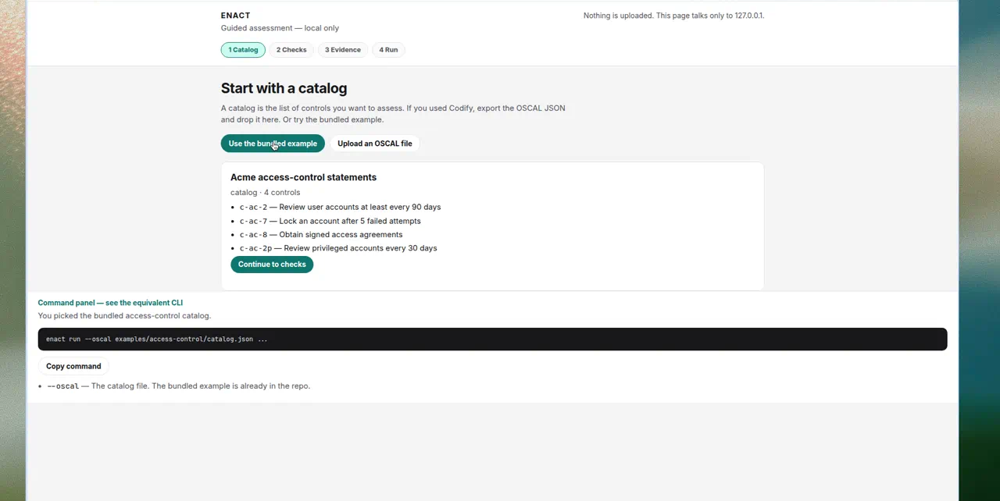

Passing IAM config
PassedReview every 30 days, lockout after 3 tries, privileged review every 14 days — inside the OSCAL thresholds.
Enact
Local-first guided assessment
Codify writes the catalog; Enact runs the checks. Nothing leaves the machine.
# After install — localhost only
$ enact ui
Enact UI (localhost only) at http://127.0.0.1:43174/
Catalog → Checks → Evidence → Run
Command panel shows the equivalent CLI for CI laterEnact turns OSCAL controls into local checks and writes the results back as OSCAL assessment results. Codify writes the catalog; Enact runs the checks. Nothing leaves the machine.
enact ui — a guided app on localhost only.This hosted Pages site is a static demo. The guided app runs on your machine; this site does not host the app. A browser-only path (no install) is in progress — try the OPA spike (vendored sample only; no uploads).
After you install, enact ui opens Catalog, Checks, Evidence, and Run
in a local browser, with the same HTML report the CLI writes. It binds to
localhost only. This Pages site stays a static showcase; it does not host the app.

enact ui walks through a catalog,
the check library, evidence JSON, and a run. The command panel shows the CLI
for each step so you can move to a terminal or GitHub Actions later.
Catalog, profile, or component-definition. Parameters stay in OSCAL.
checks.json maps each rule_id to a control_id, engine, and automated, manual, or hybrid type.
Assessment-results JSON, POA&M items for automated failures, plus HTML and Markdown reports.
GitHub Actions runs enact run on examples/access-control/.
The HTML reports and raw OSCAL JSON below are not hand-written.
Review every 30 days, lockout after 3 tries, privileged review every 14 days — inside the OSCAL thresholds.
Review every 180 days, lockout after 20 tries, privileged review every 365 days — over the catalog limits.
Python 3.10+ and the OPA 1.8.x binary on PATH. ENACT_OPA overrides the binary path.
git clone https://github.com/code1sentinel/enact.git
cd enact
pip install -e ".[dev]" # or: uv sync --extra dev
enact uiThat is the default path. For CI and scripts, the same runner is enact run (the command panel and Download as project zip emit it):
enact run \
--oscal examples/access-control/catalog.json \
--checks examples/access-control/checks.json \
--input examples/access-control/inputs/passing.json \
--workdir examples/access-control \
--out out/pass \
--title "Access-control example (passing)"The failing run exits 1. That is expected: automated failures are the signal.